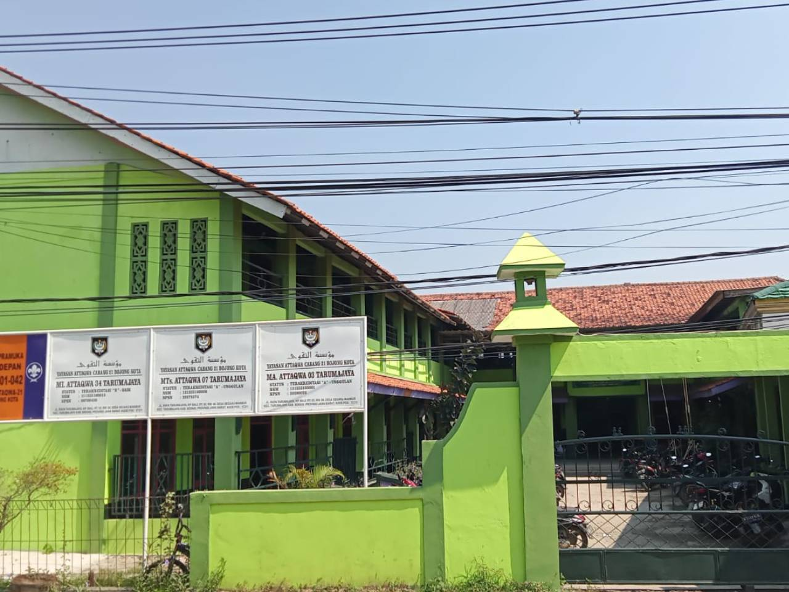

Terciptanya siswa disiplin, berwawasan luas, ikhlas,dan profesional berdasarkan Imtaq dan berwawasan lingkungan

Kelulusan Kelas 9 - Sambutan Kepala Madrasah
Kelulusan Kelas 9 - Pembacaan Shalawat oleh OSIS
Kelulusan Kelas 9 - Prosesi Kelulusan
Kelulusan Kelas 9 - Tari Melayu, oleh Siswi Kelas 7

Kelulusan Kelas 9 - Foto bersama
Kelulusan Kelas 9 - Hymne Guru
Kelulusan Kelas 9 - Orang tua dan Tamu Undangan
Kelulusan Kelas 9 - Orang tua dan Tamu Undangan
Tes Baca Al Qur'an Peserta Putri
Tes Baca Al Qur'an Peserta Putra
Tes Tulis Peserta Putra
Tes Tulis Peserta Putri
Masa Orientasi Siswa (MOS) Putri
Masa Orientasi Siswa (MOS) Putra

Masa Orientasi Pramuka (MOP) - Upacara Pembukaan

Masa Orientasi Pramuka (MOP) - Api Unggun
Sumbangan perlengkapan sekolah PT. Andalan Furnindo kepada siswa
Sumbangan perlengkapan sekolah PT. Andalan Furnindo kepada siswa

HUT RI 2024 - Lomba Makan Kerupuk

HUT RI 2024 - Lomba Busana

HUT RI 2024 - Lomba Kostum

HUT RI 2024 - Lomba Tarik Tambang
Gladi ANBK Siswa/i Kelas 8
Rapat Wali Murid Kelas 7
Rapat Wali Murid Kelas 8
Rapat Wali Murid Kelas 9
Pelaksanaan ANBK Kelas 8
Latihan Marawis
Renovasi Bangku
Renovasi Ruang Perpustakaan, OSIS, dan UKS.
Pembinaan Akreditasi oleh Pengawas Kemenag
Rapat Persiapan Akreditasi Madrasah
Jl. Raya Tarumajaya Kp. Bali Desa Segaramakmur Kecamatan
Tarumajaya Kabupaten Bekasi 17211
Ends On : 01-11-2024